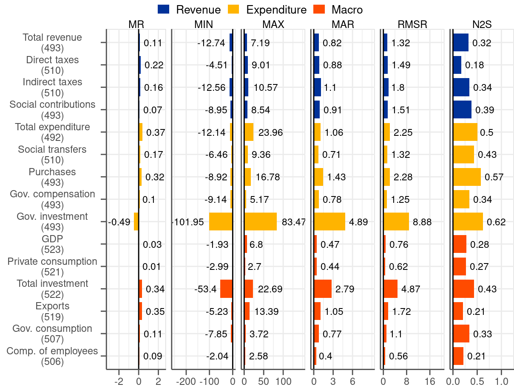
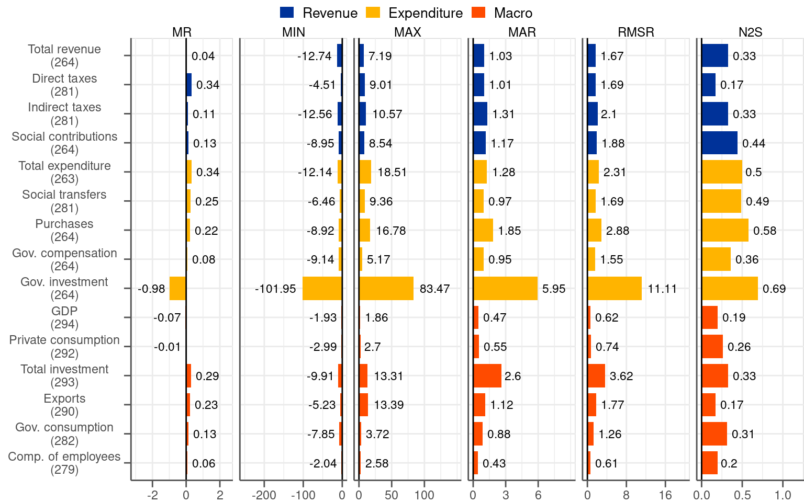
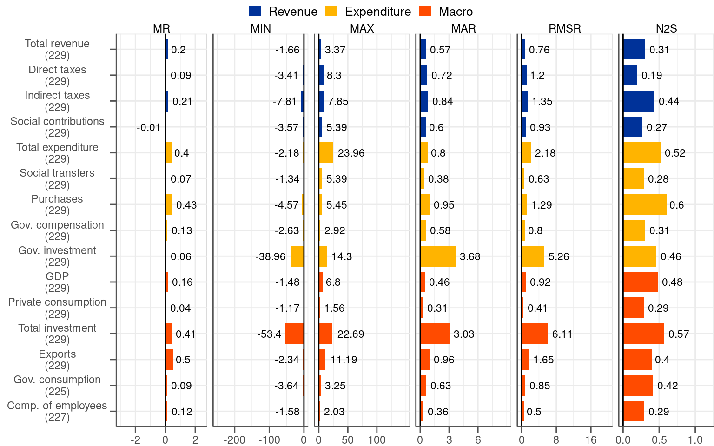

3 Unconditional properties of final revisions
To characterise the revisions we look first at the set of summary statistics. To this end, we calculate for all fiscal and macro variables the following metrics:
- Mean revision: \(MR=\frac{1}{MT}\sum\limits_{m=1}^{M}\sum\limits_{t=1}^{T}r_{t,m}^{f}\), where m is a country index, t is a time index, M is the number of countries and T is the number of periods
- Maximum and minimum revision: \(MAX=\max{r_{t,m}^{f}}\) and \(MIN=\min{r_{t,m}^{f}}\)
- Mean absolute revision: \(MAR=\frac{1}{MT}\sum\limits_{m=1}^{M}\sum\limits_{t=1}^{T}|r_{t,m}^{f}\)|
- Root mean square revision: \(RMSR=\frac{1}{MT}\left[\sum\limits_{m=1}^{M}\sum\limits_{t=1}^{T}\left(r_{t,m}^{f}\right)^{2}\right]^{\frac{1}{2}}\)
- Noise-to-signal ratio (i.e. the standard deviation of final revisions divided by the standard deviations of final values): \(N2S=\frac{1}{MT}\left[\sum\limits_{m=1}^{M}\sum\limits_{t=1}^{T}\left(r_{t,m}^{f}-MR\right)^{2}\right]^{\frac{1}{2}}/{\frac{1}{MT}\left[\sum\limits_{m=1}^{M}\sum\limits_{t=1}^{T}\left(x_{t,m}^{f}-\bar{x}_{t}^{f}\right)^{2}\right]^{\frac{1}{2}}}\)
The MR statistic will help us assess whether revisions are biased. Other metrics are useful for assessing the dispersion of the revisions.
3.1 Entire sample 2006Q3-2019Q4
The first column of Figure 3.1 reports the mean revision (MR), which is informative about the bias. The results point to a positive MR for all fiscal variables except for government investment. The interpretation of these results is that statistical agencies tend to initially underestimate fiscal figures. Regarding the size, MR for most of the variable falls into the interval of 0.1-0.3 percentage points. Given that the average growth rate for most of the variables in the sample is slightly above 4% (see Figure B.2) the revision bias is non-negligible, albeit not large. While GDP and private consumption appear to be unbiased other macro variables have a positive MR, like the fiscal variables.
The next two columns present the MIN-MAX range of revisions. The intervals are relatively wide, and in some cases extremely wide (see, for instance, government investment with the range from \(-102\) to \(+83\) percentage points). Even the fiscal variables with the most contained ranges, like social transfers, are associated with a wider interval than the usually stable macro categories (i.e. output, private consumption or wages and salaries). The MIN-MAX interval is a first indication that the revisions to fiscal variables may be larger than these associated with the macro data.
Next we report the mean absolute revision (MAR), which by contrast to MR, ensures that negative and positive revisions do not cancel each other out. The statistic summarises the magnitude of the revisions by treating all of them, regardless their sign and size, equally. It turns out that the least revised fiscal items are variables on the revenue side as well as big categories on the spending side, namely social transfers and gov. compensation. MAR associated with them tends to remain below 1 percentage point. The values are significantly higher than for MR and should be regarded as relatively sizeable given the average growth of these variables in the sample (around 4%). MAR values for these fiscal variables are approximately double of the corresponding statistics for the stable macroeconomic variables (i.e. output, private consumption and wages and salaries) amounting to around 0.5 percentage points, which are by no means small. MAR statistics for the remaining fiscal variables are even higher with government investment being characterised by the largest figure (almost 5 percentage points, which even exceeds the average growth rate of this variable below 4%, as can be seen in Figure B.2).
The fifth column of Figure 3.1 reports the root-mean-square revision (RMSR). Compared to MAR, this statistics penalises big revisions by means of squaring. Notwithstanding this, RMSR gives broadly the same picture as MAR. Its contribution is a magnification of the metric for variables that are subject to big revisions, like government investment, which stands out even by a wider margin than in the case of MAR.
Finally, in the last column we report the noise-to-signal ratio (N2S), which compared to RMSR takes into account the volatility of a variable itself. This measure brings the fiscal variables closer to the macro variables. Since fiscal categories tend to be more volatile compared to the macro variables (see Figure B.2) it is natural that they are more heavily revised. The N2S statistic reflects upon this consideration. Judging by this measure direct taxes turn out to be the variable with the smallest relative revisions. Moreover, the heavily revised government investment do not appear so exceptional any longer compared to other variables.
To sum up the results of Figure 3.1, it turns out that almost all variables we consider in the analysis are associated with a positive bias, as judged by the MR statistic. The notable exceptions are output and private consumption, which both have roughly a zero mean, and government investment, which has a negative mean. Other measures, namely MIN-MAX range, MAR and RMSR, indicate that the revisions tend to have large dispersion. This particularly applies to fiscal variables, which record twice as large MAR compared to macro variables (at least when it comes to the most stable and largest categories in the two groups). Moreover, government investment, clearly stands out as particularly sensitive to big revisions, similarly to total investment. Once we recognise the fact that certain variables tend to be more volatile than others the variation across variables diminishes considerably, as captured by the N2S ratio statistic.
3.2 Pre and post-2014Q2 subsamples
The analysis presented above indicated that fiscal revisions exhibit considerably bigger dispersion than macro revisions (i.e. approximately twice as big when measured by MAR). This is in line with the existing literature, which states that fiscal variables are subject to particularly sizeable revisions (see, for instance, Cimadomo (2016)). This widely held view casts severe doubts on the quality of fiscal data in real time. Having in mind the illustration in Figure 2.4 indicating that fiscal revisions in the euro area dropped significantly over time we re-evaluate the existing belief. To this end, we split the sample in 2014Q2, which is the quarter for which the initial release was reported according to ESA 2010 for the first time. Also, 2014 is the point at which the reporting of Government Finance Statistics became obligatory, even though countries had been reporting them on voluntary basis before. Having split the sample, coincidentally into two roughly equal parts, we recalculate the summary statistics for the two subsamples.


A close look at Figure 3.2 reveals that summary statistics in the two periods differ considerably for fiscal variables. While the MR metric points to a positive bias of a comparable magnitude in the both subsamples the differences for statistics representing dispersion are stark. Just to start with, the MIN-MAX interval reported in the second and third column of Figure 3.2 shrinks significantly for fiscal variables in the post 2014Q2 subsample. In the same vein, the variables in the second subsample are associated with considerably lower (i.e. around half for most of the items) MAR compared to the first subsample. As easy to anticipate, the same applies to the RMSR measure.
No similar reduction in the statistics measuring the dispersion of the revisions is visible for the macro variables. The MAR statistic, which we regard as the most illustrative, remains broadly the same between the two subsamples. Even though the values differ slightly, no systematic reduction in the metric is visible in the post-2014Q2 subsample.
In general and as expected, the summary measures point out a considerable drop in the magnitude of fiscal revisions in October 2014. The second subsample, which captures post-ESA 2010 introduction observations, is more representative for the description of the current features of the data rather than the entire sample, let alone the first subsample under ESA 95. Looking at Figure 3.1 and Figure 3.2 it becomes evident that the statistics for the entire sample are heavily affected by the extraordinarily high values present in the first subsample.1 If the objective of the analysis is to characterise the current properties of the revisions more focus should be given to the post-2014Q2 horizon.
1 Some extraordinary values of the revisions in the first subsample may relate to the Great Financial Crisis. At the time governments undertook multiple support measures, most notably to assist the financial sector. The statistical recording of the associated transactions was more uncertain than usually.
As fiscal revisions drop significantly in size and macro revisions remain broadly unchanged the difference between the two types of variables narrows down by a considerable margin. Concretely, post-2014Q2 MAR for fiscal variables is in the same ballpark as for macro categories. The MAR measure does not exceed significantly 0.5 percentage points in the case of both types of variables.
All in all, our analysis contradicts the claim that fiscal variables are particularly prone to revisions. Since 2014 the degree to which fiscal variables are revised is not considerably different compared to macro variables. This is not to say that the revisions are well-behaved as the opposite comes out of our analysis. In the second subsample, which is more representative for describing current data properties, the revisions to both fiscal and macro variables are positively biased and still dispersed. The two properties stand in contrast with the requirements for well-behaved revisions.